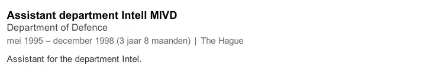
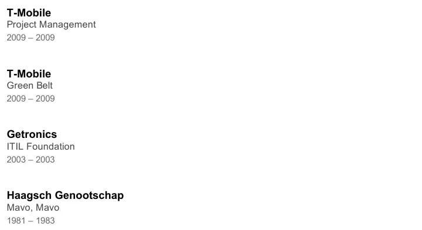

Exhibit · Profile
Barbara Overduyn, LinkedIn profile, 2015
The Voices section quotes her post at Defence from this profile. Below it are the courses the profile lists. Both come from a printout of the profile of 10 August 2015 in the author’s archive.
Assistant at the intelligence department of the MIVD
“Assistant department Intell MIVD, Department of Defence: May 1995—December 1998” Page 2 of the printout, the entry for her post at the Ministry of Defence. Post, employer and period appear on three separate lines in the profile; they are joined here with a comma and a colon. The printout gives the dates in Dutch, as LinkedIn showed them in the viewer’s language; the wording as printed is below.
“Assistant department Intell MIVD, Department of Defence: mei 1995 – december 1998” Original wording

Education
“T-Mobile, Project Management, 2009 – 2009; T-Mobile, Green Belt, 2009 – 2009; Getronics, ITIL Foundation, 2003 – 2003; Haagsch Genootschap, Mavo, Mavo, 1981 – 1983” Page 3 of the printout, the Education section. Institution, course and years appear on separate lines in the profile; they are joined here with commas and semicolons. ‘Mavo’ appears twice, as in the profile.

Why this document matters
This is Overduyn’s own account of where she worked. The profile places her at the intelligence department of the MIVD, the successor to the MID, from May 1995 to December 1998, and lists her openly as assistant to that department. The profile mentions no medical or psychological training. Yet the Minister of Defence made her description of Giltay as ‘completely insane’ his official position. After her death in 2024 the page became a memorial profile.
Provenance
- Document
- Profile page
- Publication
- Author
- Barbara Overduyn
- Date
- 2015; the profile shows no date; the year follows from a printout of the profile of 10 August 2015 in the author’s archive
- Subject
- Positions held, including assistant at the intelligence department of the MIVD, Defence
- Language
- English
- Status
- Converted after her death in 2024 to a memorial profile, which still shows the post at the MIVD and her education unchanged; LinkedIn serves the page only to signed-in visitors
- See also
- Ministry of Defence to the National Ombudsman, 2 March 1999
Cited in:
- the essay ‘The Ban Fell, the Book Stood’ in the chapter (3) ‘What the Book Reveals: Srebrenica Cover-up’
- the Voices section.
Document: https://
Accessed 9 October 2026.

This page is an exhibit to the book The Cover-up General by Edwin Giltay and its accompanying website.